The Correlation Parameter in Mixed Effects Models
June Choe ![]()
What is Corr in the output of mixed-effects models?
When fitting mixed effects regression models, especially those that try to keep it “maximal” (as per Barr, Levy, Scheepers, & Tily 2013), the random effects in the output of the model sometimes displays a column named Corr where some rows have numbers that range from -1 to 1.
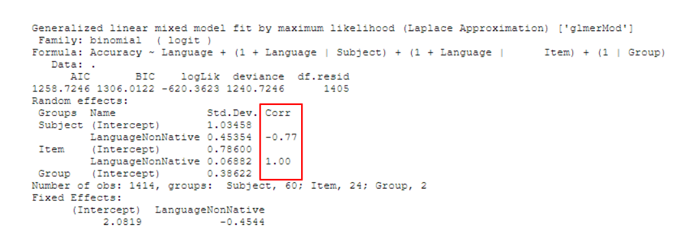
It’s easy to guess that Corr stands for correlation and that the numbers in the column are correlation coefficients. If there are multiple predictors and the random effects structure includes more than one of those terms (e.g., (1 + Effect_1 * Effect_2 | Subject)), we even get another clue for this from the way that the Corr values spread out in the shape of a right triangle, much like in a correlation matrix.
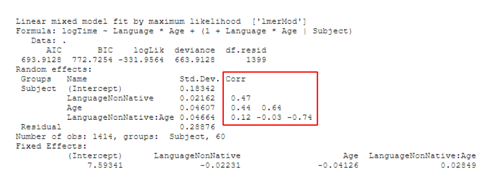
Despite the fact that we’re bound to have encountered this at some point when working with or reading about mixed effects models, I’ve found that there aren’t many beginner-friendly material explaining what they are - there are one-paragraph StackExchange answers and dense statistics papers, but not much in between in terms of comprehensiveness.
So here are my compiled notes on correlation parameters in linear mixed effects models that I’ve made for myself (with a basic knowledge of LMEMs).
Before we get started
Our toy data and model
For the purposes of this discussion, I have created a toy experiment data (the code used to generate it is attached at the bottom).
The dataset toydata has 1,920 rows with the following columns:
Subject: The subject ID, which ranges from 1 to 80Item: The item ID, which ranges from 1 to 24Condition: The experimental condition, which is eitherControlorTreatmentResponse: A continuous observed variable
toydata
# A tibble: 1,920 x 4
Subject Item Condition Response
<fct> <fct> <fct> <dbl>
1 1 1 Control 226.
2 1 2 Treatment 300.
3 1 3 Control 239.
4 1 4 Treatment 262.
5 1 5 Control 241.
6 1 6 Treatment 264.
7 1 7 Control 237.
8 1 8 Treatment 230.
9 1 9 Control 229.
10 1 10 Treatment 283.
# ... with 1,910 more rowsImagine toydata to be the results from a very simple experiment. In this imaginary experiment, there are 80 subjects and each subject is tested on 24 items, resulting in a total of 1,920 trials/observations. This is a within-partipant design, so each participant sees 12 of the items in the Control condition and the other 12 in the Treatment condition.
Let’s say that with our toy data, we want to know whether Condition has a positive effect on Response. Our goal by using mixed-effects modeling is to isolate the effect of Condition on Response (fixed effect), while controlling for by-item and by-subject variations (random effects). So let’s fit a simple linear mixed-effects model with the maximal random effects structure, with random intercepts and slopes for Condition by Subject and Item:
model <- lmer(Response ~ Condition + (1+Condition|Subject) + (1+Condition|Item),
REML = FALSE, control = lmerControl('bobyqa'), data = toydata)
And let’s really quickly check model assumptions:
performance::check_model(model)
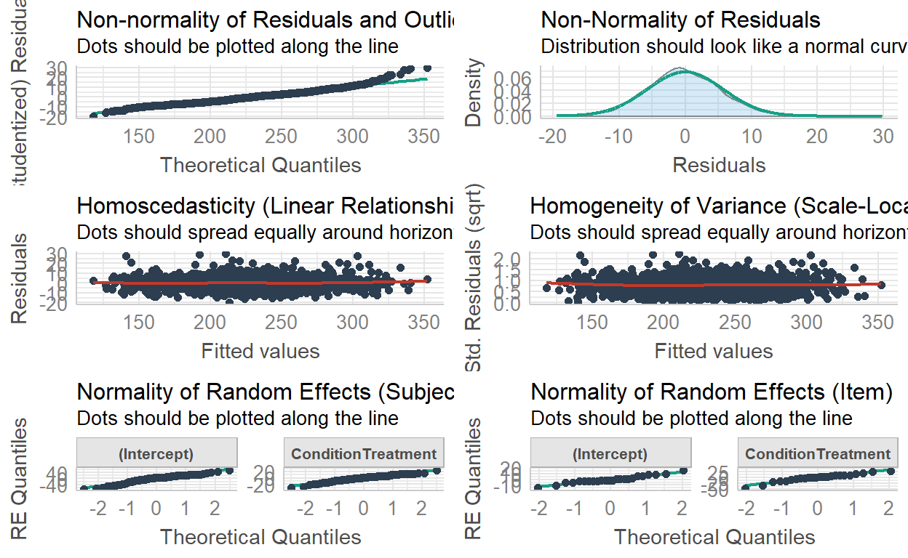
Everything looks okay, so let’s look at the model output:
summary(model)
Linear mixed model fit by maximum likelihood . t-tests use Satterthwaite's
method [lmerModLmerTest]
Formula: Response ~ Condition + (1 + Condition | Subject) + (1 + Condition |
Item)
Data: toydata
Control: lmerControl("bobyqa")
AIC BIC logLik deviance df.resid
13267 13317 -6624 13249 1911
Scaled residuals:
Min 1Q Median 3Q Max
-3.176 -0.627 -0.065 0.576 4.864
Random effects:
Groups Name Variance Std.Dev. Corr
Subject (Intercept) 637.1 25.24
ConditionTreatment 108.1 10.40 0.85
Item (Intercept) 44.4 6.66
ConditionTreatment 308.2 17.56 0.14
Residual 37.4 6.11
Number of obs: 1920, groups: Subject, 80; Item, 24
Fixed effects:
Estimate Std. Error df t value Pr(>|t|)
(Intercept) 209.64 3.14 100.84 66.8 < 2e-16 ***
ConditionTreatment 35.88 3.78 28.52 9.5 2.5e-10 ***
---
Signif. codes: 0 '***' 0.001 '**' 0.01 '*' 0.05 '.' 0.1 ' ' 1
Correlation of Fixed Effects:
(Intr)
CndtnTrtmnt 0.291The high t-statistic and low p-value of ConditionTreatment in the fixed effects output suggests that our data is extremely unlikely given the null hypothesis that Condition has no effect on Response (and the sign of the estimate further suggests a positive effect of the Treatment condition on Response compared to the Control condition). Therefore, this is strong evidence in support of our hypothesis.
Here’s a nicer-looking summary table made with tab_model() from the {sjPlot} package. I will keep using this format from this point on. Not only is this nicer to look at, the notations used here (like \(\tau_{00}\) and \(\rho_{01}\)) are from Barr et al. (2013), so it’s easier to connect the pieces IMO.
sjPlot::tab_model(model)
| Response | |||
|---|---|---|---|
| Predictors | Estimates | CI | p |
| (Intercept) | 209.64 | 203.49 – 215.80 | <0.001 |
| Condition [Treatment] | 35.88 | 28.48 – 43.28 | <0.001 |
| Random Effects | |||
| σ2 | 37.37 | ||
| τ00 Subject | 637.14 | ||
| τ00 Item | 44.39 | ||
| τ11 Subject.ConditionTreatment | 108.10 | ||
| τ11 Item.ConditionTreatment | 308.21 | ||
| ρ01 Subject | 0.85 | ||
| ρ01 Item | 0.14 | ||
| ICC | 0.97 | ||
| N Subject | 80 | ||
| N Item | 24 | ||
| Observations | 1920 | ||
| Marginal R2 / Conditional R2 | 0.216 / 0.975 | ||
Okay so our finding is great and all but we’re more interested in the random effects here so let’s look at that.
The random effects (a review)
We can isolate the random effects from the model using VarCorr():
VarCorr(model)
Groups Name Std.Dev. Corr
Subject (Intercept) 25.24
ConditionTreatment 10.40 0.85
Item (Intercept) 6.66
ConditionTreatment 17.56 0.14
Residual 6.11Let’s ignore the Corr column for a moment and talk about Std.Dev first.
The Std.Dev. values for the Subject random effects group suggest that the variation in the subject intercepts are fitted with a larger standard deviation of 25.24 and that the variation in subject slopes for Condition are fitted with a smaller standard deviation of 10.4.
Let’s plot the by-subject variation:
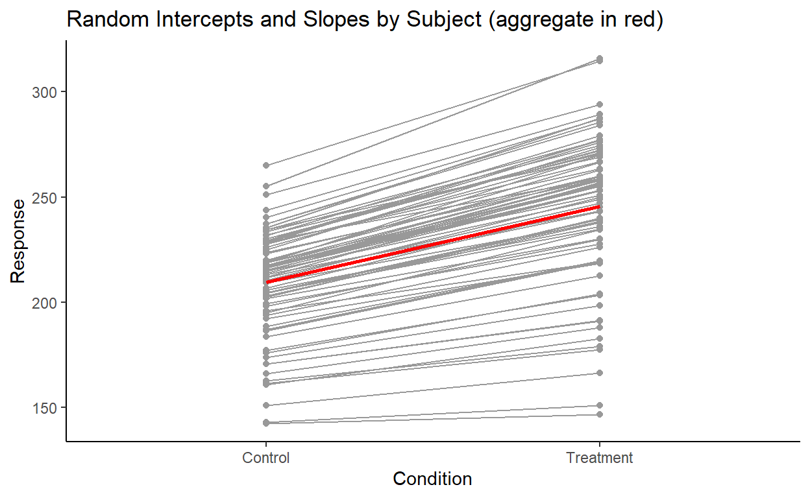
We see a clear variation in the intercepts, and a subtler variation in the slopes. This is overall pretty consistent with the stand deviation values for subject random effects that we found earlier.
Let’s plot the by-item variation as well:
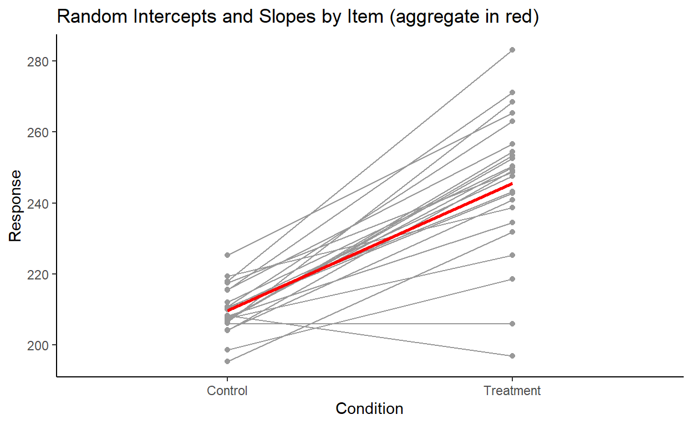
Here, we see the opposite: a clear variation in the slopes, and a subtler variation in the intercepts. Again, this is overall pretty consistent given the item random effects output: a larger standard deviation for the item slopes and a smaller standard deviation for item intercepts, as we found earlier.
Now that we’ve reviewed Std.Dev., let’s talk about Corr, which is our main focus.
The Correlation Parameter
Looking at the Corr column now, we see two numbers: 0.85 within the Subject random effects group and 0.14 within the Item random effects group.
Groups Name Std.Dev. Corr
Subject (Intercept) 25.24
ConditionTreatment 10.40 0.85
Item (Intercept) 6.66
ConditionTreatment 17.56 0.14
Residual 6.11As you might have guessed, they have something to do with the correlation between random effects (intercept and slope) within each group (subject and item).
But if we extract the subject random effects, for example, and measure the correlation between subject intercepts and subject slopes, we get a slightly different number:
# Extract by-subject intercept and slope
ranef_subj <- ranef(model)$Subject
ranef_subj_intercepts <- ranef_subj$`(Intercept)`
ranef_subj_slopes <- ranef_subj$ConditionTreatment
# Calculate correlation
cor(ranef_subj_intercepts, ranef_subj_slopes)
[1] 0.88In fact, we get slightly different values for the standard deviation of the subject random intercepts and slopes as well:
# Calculate the standard deviation of by-subject intercepts and slopes
summarize_all(ranef_subj, sd)
(Intercept) ConditionTreatment
1 25.3 10.18So it looks like what the model isn’t just taking the random effects in our toydata dataset and calculating their variations and correlations. So then what is it doing?
How the model estimates random effects
What we have to keep in mind when doing mixed effects modeling is that the model is fitting the random effects in the data, rather than just describing them. More specifically, the model is estimating population parameters that generated the sample of random effects that are seen in the data.1
And in fact that’s exactly what we want to do. We don’t care about how individual subjects or items behave in our experiment, in the sense that we don’t care how fast John Doe presses a button, for example. We don’t want to predict John Doe’s behavior, but we do want to estimate, using data from John Doe, Jane Doe, Average Joe, and other participants from our experiment, the overall distribution of people’s idiosyncratic tendencies so that we can statistically control for them to get a better estimate for the fixed effects that we care about.
Take the random intercepts by subject for example. The model estimated the distribution of subject intercepts to follow a normal distribution with a standard deviation of 25.24, which is a an estimate of the Population. The variation in subject intercepts in the data itself that we manually calculated above (25.3) is the Sample standard deviation. Of course, if the sample follows a normal distribution and if we also assume the population to be normally distributed, the sample variance should be the best estimate for the population variance. And in fact they do end up being very close!
So the numbers in the Std.Dev. colum are the model’s fit for the variation within each random effect.
With this, we now have a better understanding of the numbers in the Corr column: they are the model’s fit for the correlation between random effects.
To go more in depth with our discussion, let’s plot the intercepts and slopes for our 80 subjects:
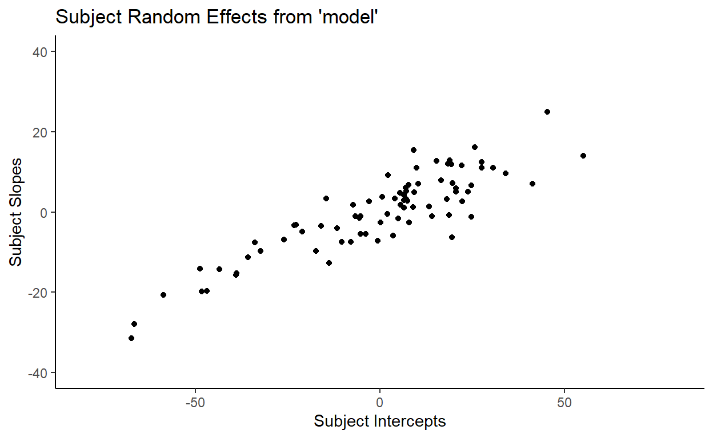
Recall that when we manually calculated the correlation between subject intercepts and subject slopes within our sample of 80 subjects in the data, we got 0.88. That is in fact what is shown by the plot above.
And as we discussed earlier, the numbers in the Std.Dev. column are the model’s fit for the variation within each random effect. So the model is saying that the variation for subject intercepts follows a normal distribution with mean = 0 and standard deviation = 25.24. Likewise, the model is saying that the variation for subject slopes follows a normal distribution with mean = 0 and standard deviation = 10.4.2
So the model estimates these two distributions - one for subject slopes and one for subject intercepts - to capture the overall distribution of subject random effects.
This is illustrated below, where the normal curve at the top is the distribution of subject intercepts estimated by the model, and the normal curve to the right is the distribution of subject slopes estimated by the model. For every subject, their intercepts and slopes are understood to be generated from these two underlying parameters:
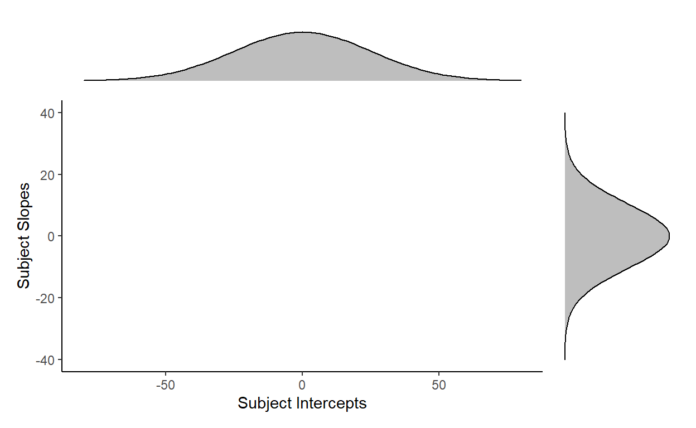
But is specifying each distribution for intercept and item enough to capture the overall distribution of subject random effects?
One way to test this is to work backwards and generate some observations from the model’s parameters. The idea here is this: if the two normal distributions (one for subject intercept and one for subject slope) can sufficiently capture the distribution of the subject random effects, then sampling from them should yield a distribution that is in the shape of the actual distribution in our data.
Let’s draw 80 samples of subject intercepts and subject slopes from their respective distributions and then plot them together. Here’s one result:
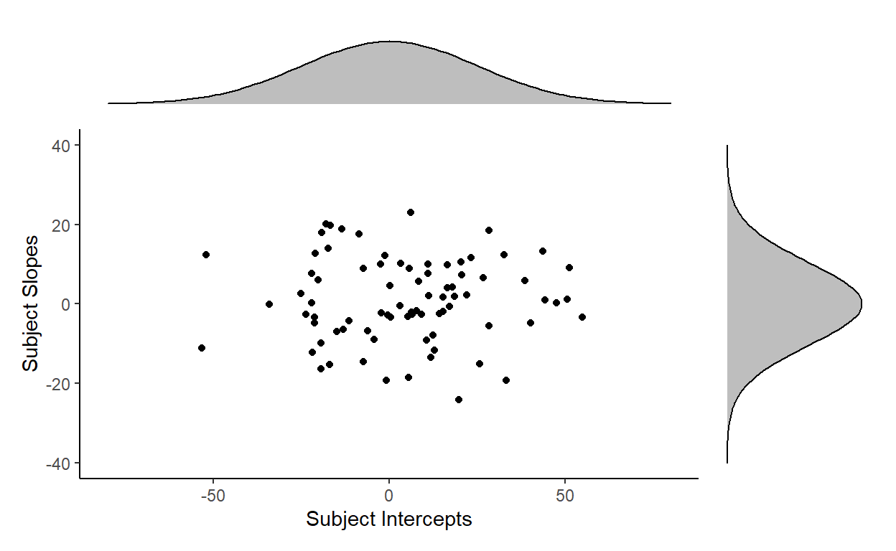
These points are consistent with what the two distributions predict: there are more points towards the center (the means of the distributions) and less points towards the corners (the tails of the distributions).
But this doesn’t look like the actual distribution of our subject random effects.
We can repeat this sampling procedure many times, but none of them look close to the distribution of the subject random effects in our data:
For clearer comparison, here is the plot of the subject random effects in our data again.
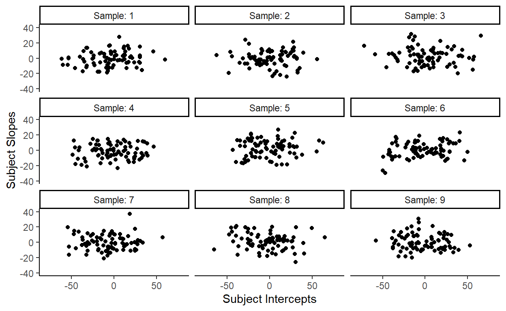
So what are we missing here?
Well, what’s missing here is the correlation between the intercepts and slopes that I conveniently left out to demonstrate that just specifying the individual distributions for subject intercepts and subject slopes poorly captures the actual distribution of subject random effects in our data.
In more technical terms, treating the two random effects as independently sampled from their respective distributions fails to fit the data well because the two random effects are highly correlated. They should instead be treated as being jointly sampled from a bivariate distribution
And that’s exactly what adding the correlation parameter does. Let’s break this down.
When we say that two variables are independently sampled from two distributions (as we just did above), then their joint distribution looks something like this, where most of the data is expected to fall within the grey shaded ellipse:
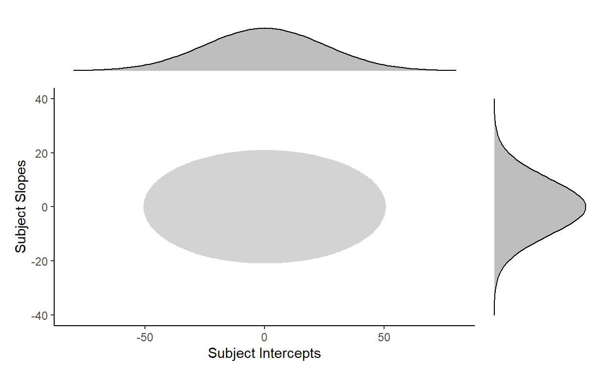
This is clearly a bad fit for the distribution of our subject random effects…
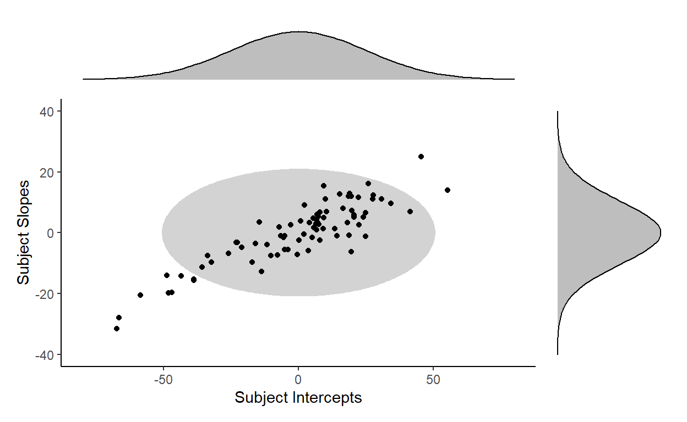
… because the distribution of the subject random effects actually takes the shape of a tilted ellipse instead (dotted outline):

In fact, we cannot generate any distribution of a tilted shape with just two independent distributions for each variable. We need to factor in covariation to capture the correlation between variables. Barr et al. (2013) illustrates this clearly in the supplementary materials to their paper. You can see from the plot below (originally Figure 1 on the linked page) that without the correlation parameter, you can only capture distributions that are symmetrical with respect to the axes (the darker ellipses). However, once you add in a correlation parameter (\(\rho\)), you can capture distributions that are in the “tilted” shape (the lighter ellipses) like the distribution of our highly correlated subject intercepts and subject slopes.
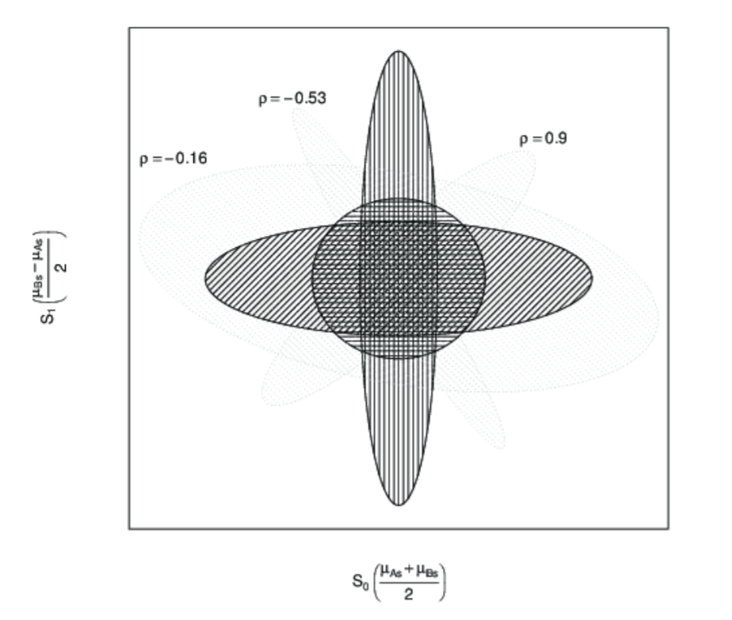
Figure 1: Figure from Barr et al. (2013)
Putting it all together
Here’s the output of model again:
| Response | |||
|---|---|---|---|
| Predictors | Estimates | CI | p |
| (Intercept) | 209.64 | 203.49 – 215.80 | <0.001 |
| Condition [Treatment] | 35.88 | 28.48 – 43.28 | <0.001 |
| Random Effects | |||
| σ2 | 37.37 | ||
| τ00 Subject | 637.14 | ||
| τ00 Item | 44.39 | ||
| τ11 Subject.ConditionTreatment | 108.10 | ||
| τ11 Item.ConditionTreatment | 308.21 | ||
| ρ01 Subject | 0.85 | ||
| ρ01 Item | 0.14 | ||
| ICC | 0.97 | ||
| N Subject | 80 | ||
| N Item | 24 | ||
| Observations | 1920 | ||
| Marginal R2 / Conditional R2 | 0.216 / 0.975 | ||
And let’s keep focusing on the subject random effects for now.
There are three parameters that the model estimated to capture the by-subject variation:
The variation (
Std.Dev.) for subject interceptThe variation (
Std.Dev.) for subject slopeThe correlation (
Corr) between subject intercept and subject slope.
With these three parameters, the model is defining a bivariate normal distribution, from which subject intercepts (\(S_{0s}\)) and subject slopes (\(S_{1s}\)) are sampled from (Equation 3 from Barr et al., 2013):
\[(S_{0s}, S_{1s})\ \sim\ N(0,\begin{bmatrix}\tau_{00}^2 & \rho\ \tau_{00}^2 \tau_{11}^2 \\ \rho\ \tau_{00}^2 \tau_{11}^2 & \tau_{11}^2 \end{bmatrix})\]
For the variance-covariance matrix, we can substitute the standard deviation for the subject intercept \(\tau_{00}^2\) with 25.24, the standard deviation for the subject slope \(\tau_{11}\) with 10.4, and the correlation \(\rho\) with 0.85 to get the following:
\[(S_{0s}, S_{1s})\ \sim\ N(0,\begin{bmatrix}25.24^2 & 0.85\ \times\ 25.24\ \times\ 10.4 \\ 0.85\ \times\ 25.24\ \times\ 10.4 & 10.4^2 \end{bmatrix})\]
If subject intercepts and subject slopes are jointly sampled from the above distribution, most observations should fall within this grey area:
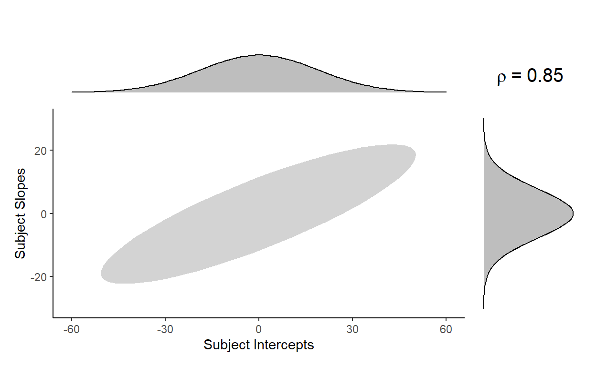
Let’s again repeatedly sample from this new bivariate distribution (which you can do with mvrnorm() from the {MASS} package) to check:
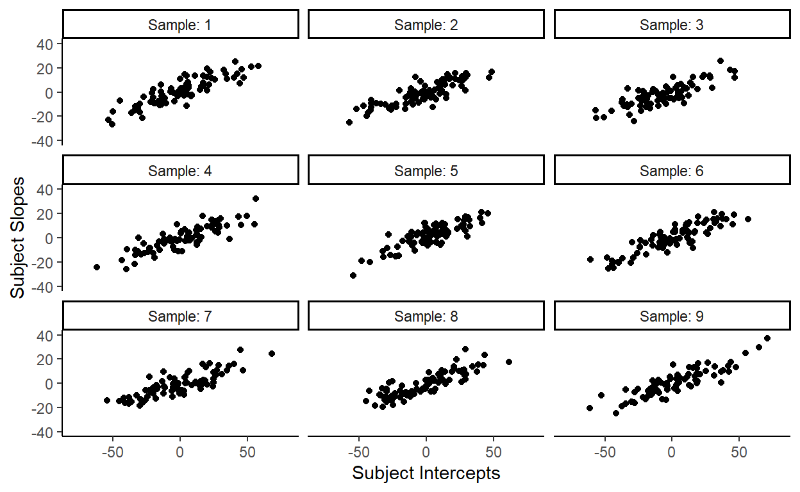
Like we expected, this new distribution generates observations of subject slopes and subject intercepts that are highly correlated. But more importantly, the distribution of subject random effects in our data looks like it could be one of these samples, meaning that this bivariate normal distribution fits our data well.
Good thing that we had the model estimate this parameter by specifying the random effects structure for subjects as (1 + Condition | Subject) in our model formula!
What if we leave out this correlation parameter? Would it significantly worsen model fit?
We can check by building another model without the correlation term between the subject random effects and comparing it with our original model.3
The no_subj_cor_model below is a depleted model without the correlation parameter between the random intercepts and random slopes by subject. You can see that the subject group is missing a value in the Corr column.4
no_subj_cor_model <- lmer(Response ~ Condition + (1+model.matrix(model)[,2]||Subject) + (1+Condition|Item),
REML = FALSE, control = lmerControl('bobyqa'), data = toydata)
tab_model(no_subj_cor_model)
| Response | |||
|---|---|---|---|
| Predictors | Estimates | CI | p |
| (Intercept) | 209.64 | 203.44 – 215.84 | <0.001 |
| Condition [Treatment] | 35.88 | 28.43 – 43.33 | <0.001 |
| Random Effects | |||
| σ2 | 37.34 | ||
| τ00 Subject | 649.20 | ||
| τ00 Subject.1 | 110.96 | ||
| τ00 Item | 44.56 | ||
| τ11 Item.ConditionTreatment | 311.76 | ||
| ρ01 Item | 0.14 | ||
| ICC | 0.96 | ||
| N Subject | 80 | ||
| N Item | 24 | ||
| Observations | 1920 | ||
| Marginal R2 / Conditional R2 | 0.263 / 0.970 | ||
Now let’s perform a likelihood ratio test using anova():
anova(no_subj_cor_model, model, test = 'Chisq')
Data: toydata
Models:
no_subj_cor_model: Response ~ Condition + (1 + model.matrix(model)[, 2] || Subject) +
no_subj_cor_model: (1 + Condition | Item)
model: Response ~ Condition + (1 + Condition | Subject) + (1 + Condition |
model: Item)
npar AIC BIC logLik deviance Chisq Df Pr(>Chisq)
no_subj_cor_model 8 13352 13396 -6668 13336
model 9 13267 13317 -6624 13249 87.2 1 <2e-16 ***
---
Signif. codes: 0 '***' 0.001 '**' 0.01 '*' 0.05 '.' 0.1 ' ' 1The first thing to notice is that no_subj_cor_model has one less Df, or degrees of freedom, than model. This is because every correlation between random effects is an additional parameter that the model is estimating. So removing the correlation between random effects for no_subj_cor_model leaves it with 8 parameters, one less than the original, full model. There’s a good discussion of what parameters are specified by different lmer() formulas in this StackExchange thread.
After performing this sanity check, the next thing to note is the very low number in Pr(>Chisq), telling us that the models are significantly different from one another. This might come off as weird if you’re only used to performing ANOVA comparisons to check whether a predictor is significant or not. In fact, there are no obvious differences between the output of no_subj_cor_model and the output of our original model other than the presence/absence of the correlation between subject random effects.
But clearly something major is going on behind the curtains, so we turn to the last term(s) of interest - AIC and BIC, which are scores for model fit. The numbers are hard to interpret on their own, but useful when comparing models. Here, both the AIC and the BIC of no_subj_cor_model are higher than model, suggesting that no_subj_cor_model has a worse fit, and a statistically significant one at that.
More specifically, we know that the only meaningful difference between no_subj_cor_model and model is the correlation parameter for the subject random effects, so no_subj_cor_model must be capturing the subject random effects relativelty poorly under its assumption that subject intercepts and subject slopes do not correlate with one another (i.e., that they are independent).
So let’s look at the random effects calculated by no_subj_cor_model and its poor attempt at fitting their distribution.
First, let’s plot the subject intercepts by subject slopes like we did for our original model:
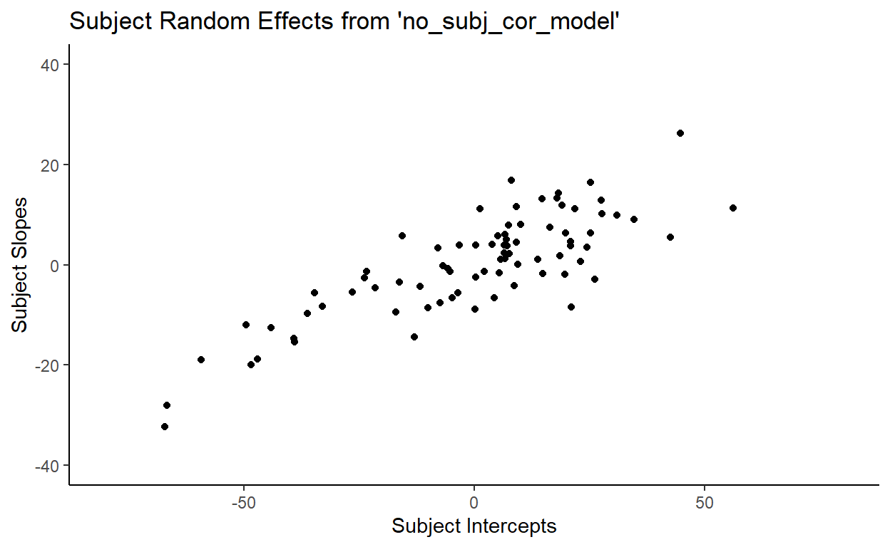
You might notice that the no_subj_cor_model calculates subject random effects that are very similar to those calculated by our original mode. Here’s a side-by-side comparison of the subject random effects from model and no_subj_cor_model:
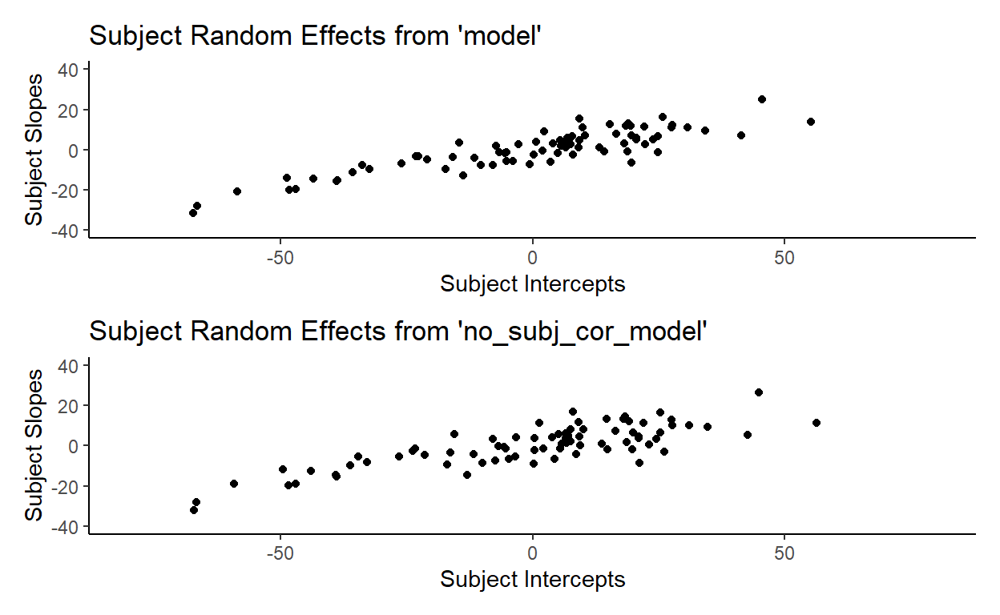
This illustrates a very important point. Removing the correlation parameter does not change the calculation of the random effects (barring any serious convergence failures, of course). This shouldn’t be surprising because random effects, like fixed effects, speak to facts (in the frequentist sense) about how the data that we observe is generated. It is literally the case here since I included these random effects explicitly in making toydata. But more importantly, the idea that there are random variations generated from underlying population-level parameters is an assumption that we are making when we use mixed-effects models.
The only meaningful difference between the two models here, then, is in their fit - e.g., how well the model captures the distribution of the subject random effects. We actually went over this above - we saw that our original model fits subject random effects using a bivariate normal distribution assuming a correlation, while no_subj_cor_model should be fitting subject random effects using two univariate normal distributions, assuming no (i.e., zero) correlation.
Here’s a visual comparison of model fit, with the plot for model at the top and the plot for no_subj_cor_model at the bottom:
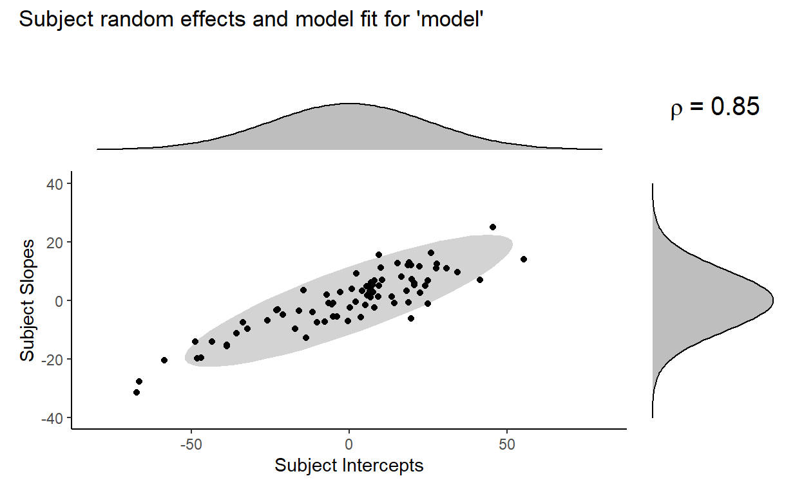
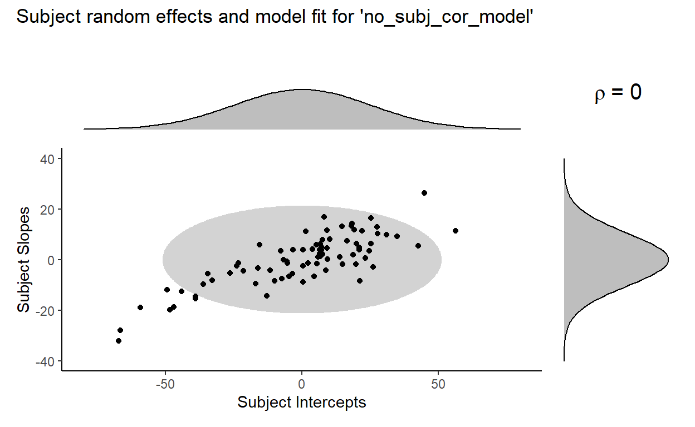
Where the term \(\rho = 0\) in the plot for no_subj_cor_model indicates that the subject intercepts and subject slopes are generated from this bivariate distribution:
\[(S_{0s}, S_{1s})\ \sim\ N(0,\begin{bmatrix} \tau_{00}^2 & 0 \\ 0 & \tau_{11}^2 \end{bmatrix})\]
Which is the same as independetly sampling from these two univariate normal distributions:
\[S_{0s} \sim N(0, \tau_{00})\]
\[S_{1s} \sim N(0, \tau_{11})\]
Now, looking at the previous pair of plots, no_subj_cor_model (bottom) clearly fits the distribution of the subject random effects poorly compared to our original model model (top), and that appears to be the driving the significant decrease in fit that we found from the likelihood ratio test earlier. It seems to be the case that the inclusion of the correlation parameter between subject random intercepts is necessary to fit the data well.
Are correlation parameters always necessary?
The question of how “maximal” our models should be is very tricky, and especially so when it concerns the inclusion/exclusion of correlation parameters (see discussions here and here). For example, Bates, Kliegl, Vasishth, & Baayen (2015) and Matuschek, Kliegl, Vasishth, & Baayen (2017) have called for parsimonious models with stricter criteria for including terms in the model, beyond whether they cause the model to fail to converge.5
I’ll demonstrate one case here where it doesn’t seem like including a correlation parameter particularly improves model fit.
Let’s repeat the model comparison process above, except this time taking out the correlation parameter for item.
For context, here is the random effects output of model again:
Groups Name Std.Dev. Corr
Subject (Intercept) 25.24
ConditionTreatment 10.40 0.85
Item (Intercept) 6.66
ConditionTreatment 17.56 0.14
Residual 6.11Again, there are three parameters that the model estimated to capture the by-item variation:
The variation (
Std.Dev.) for item interceptThe variation (
Std.Dev.) for item slopeThe correlation (
Corr) between item intercept and item slope.
And here is what the distribution of item random effects from model look like:
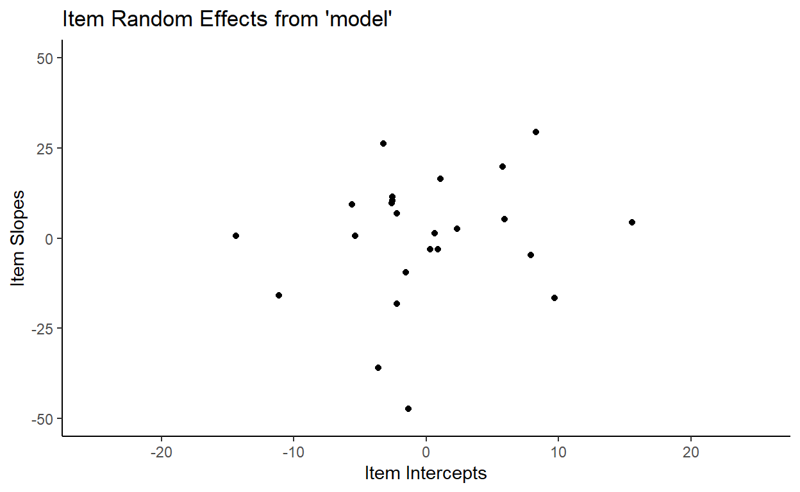
Our model fitted a bivariate normal distribution with the standard deviation of item intercepts = 6.66, the standard deviation of item slopes = 10.4, and correlation = 0.14.
We can again visualize the fit of model to the distribution of the item random effects:
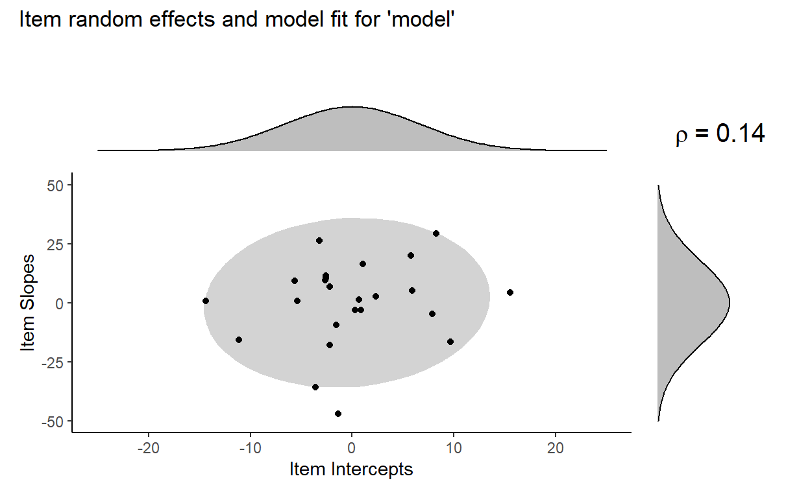
The model estimates a low correlation of 0.14, which is reflected in the small tilt of the ellipse. It looks like the model is capturing the distribution of the item random effects pretty well. But is the correlation parameter really that necessary here?
Let’s make another depleted model, no_item_cor_model, with the correlation between item random effects removed:
no_item_cor_model <- lmer(Response ~ Condition + (1+Condition|Subject) + (1+model.matrix(model)[,2]||Item),
REML = FALSE, control = lmerControl('bobyqa'), data = toydata)
tab_model(no_item_cor_model)
| Response | |||
|---|---|---|---|
| Predictors | Estimates | CI | p |
| (Intercept) | 209.64 | 203.49 – 215.80 | <0.001 |
| Condition [Treatment] | 35.88 | 28.45 – 43.31 | <0.001 |
| Random Effects | |||
| σ2 | 37.37 | ||
| τ00 Subject | 636.98 | ||
| τ00 Item | 44.55 | ||
| τ00 Item.1 | 310.22 | ||
| τ11 Subject.ConditionTreatment | 108.08 | ||
| ρ01 Subject | 0.85 | ||
| ICC | 0.96 | ||
| N Subject | 80 | ||
| N Item | 24 | ||
| Observations | 1920 | ||
| Marginal R2 / Conditional R2 | 0.244 / 0.972 | ||
Again, the output of the depleted model printed here does not differ that much from the output of model. We can see also get a sense of this by visualizing the fit of no_item_cor_model to the distribution of item random effects:
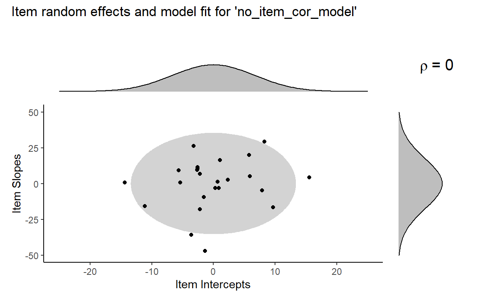
We can see this more clearly with a side-by-side comparison of model fit by model (blue) and no_item_cor_model (red):
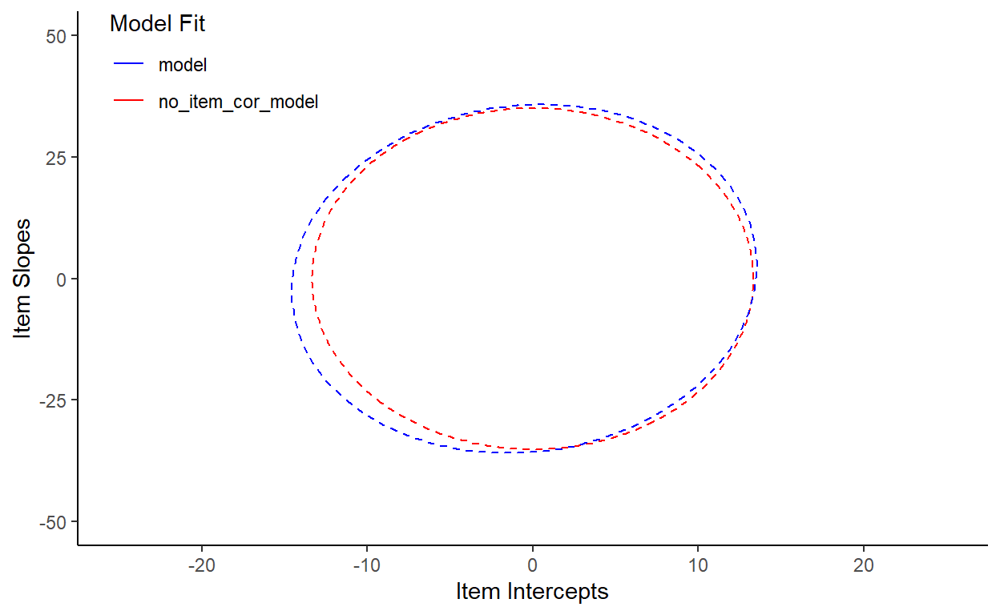
Doesn’t seem like there are big differences here, but we have to run some statistics to be sure. So let’s perform another log likelihood ratio test:
anova(no_item_cor_model, model)
Data: toydata
Models:
no_item_cor_model: Response ~ Condition + (1 + Condition | Subject) + (1 + model.matrix(model)[,
no_item_cor_model: 2] || Item)
model: Response ~ Condition + (1 + Condition | Subject) + (1 + Condition |
model: Item)
npar AIC BIC logLik deviance Chisq Df Pr(>Chisq)
no_item_cor_model 8 13265 13310 -6625 13249
model 9 13267 13317 -6624 13249 0.47 1 0.49First, for sanity check, we see that no_item_cor_model has one less Df than model, which is what we’d expect if no_item_cor_model indeed lacks the correlation parameter for item random effects. Next, we see that the value of Pr(>Chisq) is very high, at 0.49, suggesting that the models are not significantly different. This is corroborated by the very small differences between the models’ AIC and BIC values. These small differences here are likely reducible to the fact that AIC and BIC penalize more number of parameters (as a way of balancing model fit with model complexity). In fact, the differences in AIC between the models is approximately 2, which is exactly what you’d expect if you added a redundant parameter with no additional explanatory power to the model.
In sum, we see that when modeling our dataset toydata, estimating a correlation parameter for subject random effects improves model fit, while doing so for item random effects doesn’t as much.
Conclusion and implications for model building
My main goal here was to simply go over what the correlation parameter in mixed-effects models is, so the question of whether we should be including certain correlation parameter(s) in our models are beyond the scope of this discussion (and should be handled on a case-by-case basis). It’s also something that I’m in the process of learning, so I don’t have a good answer to it yet. But my personal view (which may change later with more knowledge and experience) is to keep correlation parameters in the model unless they make the model fail to converge. So in the case of the correlation parameter for item random effects in model that we discussed above, I’d personally keep that in since we didn’t run into any convergence issues fitting the maximal model. In general, if there’s no meaningful difference either way, I err towards leaving the correlation parameter in there. In other words, I try to keep the model as maximal as possible without overparameterizing it (Barr et al., 2013).
I don’t think that the spirit of this message is really controversial, and the more challenging part of this is putting it into practice. We not only need to balance model fit with model complexity, but we also often need to navigate conflicts between important considerations from statistical theory and from whatever domain our research is in (linguistics, psychology, etc.).
To resolve this, a lot of people have streamlined different methods of reducing the complexity of the random effects structure in a statistically motivated way. One such example is using Principal Components Analysis (PCA) (suggested in Bates et al., 2015). In Section 3 of their paper, Bates and colleagues outline a procedure for iterative model reduction which involves PCA (now available as rePCA() in the lme4 package) to determine how many random effect terms are sufficient to capture the variance in the random effects. This is still not a perfect solution, of course, but it’s a good next step for putting this knowledge into practice. Or you can just do fancy Bayesian analyses and avoid all these problems, so I hear
Anyways, that’s it for my notes. Here’s the code that generated toydata:
###########
## Setup ##
###########
# Load Packages (make sure dplyr::filter() isn't makes by MASS:filter())
library(MASS)
library(tidyverse)
library(lme4)
# Set seed
set.seed(1234)
# Set number of participants and items
n_subjects <- 80
n_items <- 24
#################
## Make trials ##
#################
# Generate levels
Subject <- gl(n_subjects, n_items)
Item <- rep(gl(n_items, 1), n_subjects)
Condition <- factor(rep(c(rep(c("Control", "Treatment"), n_items/2),
rep(c("Treatment", "Control"), n_items/2)),
n_subjects/2))
# Treatment coding
Condition_coded <- ifelse(Condition == "Control", 0, 1)
# Combine into trials
Data <- tibble(Subject, Item, Condition, Condition_coded)
#############################
## Add Intercept and Slope ##
#############################
# Add intercept
Data$Intercept <- 200
# Add slope
Data$Slope <- ifelse(Data$Condition == "Treatment", 30, 0)
########################
## Add Random Effects ##
########################
# By-subject variation in intercept and slope (sampled from bivariate normal)
sd_subj_intercept <- 25
sd_subj_slope <- 10
subj_ranef_cor <- 0.8
subj_ranef <- mvrnorm(n_subjects,
# means of two normals are both 0
c("Intercept" = 0, "Slope" = 0),
# 2x2 variance-covariance matrix
matrix(
c(sd_subj_intercept^2,
subj_ranef_cor*sd_subj_intercept*sd_subj_slope,
subj_ranef_cor*sd_subj_intercept*sd_subj_slope,
sd_subj_slope^2),
ncol = 2)
)
Data$Subj_intercept <- rep(subj_ranef[,"Intercept"], each = n_items)
Data$Subj_slope <- rep(subj_ranef[,"Slope"], each = n_items)
# By-item variation in intercept and slope (sampled independently)
Data$Item_intercept <- rep(rnorm(n_items, sd = 5), times = n_subjects)
Data$Item_slope <- rep(rnorm(n_items, sd = 15), times = n_subjects)
# Random noise
Data$Noise <- rnorm(nrow(Data), 0, 5) + rlnorm(nrow(Data), 0.5)
###########################
## Generate Observations ##
###########################
Data <- Data %>%
mutate(Response =
Intercept +
Slope * Condition_coded +
Subj_intercept +
Subj_slope * Condition_coded +
Item_intercept +
Item_slope * Condition_coded +
Noise)
#################
## Toy Dataset ##
#################
toydata <- Data %>%
select(Subject, Item, Condition, Response)
Footnotes
This distinction is also reflected in the fact that the notation for random effect standard deviation is tau (\(\tau\)), which is a Greek symbol. In statistics, Greek symbols (like \(\beta\), which we may be more familiar with) refers to population-level paramters.↩︎
But what if the distribution of random effects has a mean that is not equal to zero? Well that just shifts the fixed effects estimate, so the distribution of random effects can be fully characterized by just its variance/standard deviation. This is also why you should never remove a term from fixed effects without removing it from random effects like in
Response ~ 1 + (1 + Condiiton | Subject)without a good reason, because the model will assume the fixed effect ofConditionto be zero.↩︎Removing a correlation term in
lmer()turns out to be actually sort of tricky if you don’t explicitly numerically code your factors - sometimes just using the double bar syntax (||) doesn’t always work. I won’t go into the details of how to do that here, but there are good discussions of doing this usingmodel.matrix()in this Rpubs post and Section 5.4 (also Appendix E) of Frossard and Renaud (2019). I could have done numeric coding with something likemutate(data, Condition = as.integer(Condition == "Treatment")), but I wanted to try this way out for myself↩︎Here, \(\tau_{00\ Subject.1}\) is actually the same as the \(\tau_{00\ Subject.ConditionTreatment}\) term from the maximal model,
model. I don’t know how to suppress this name change after dropping a correlation term - if you do, please let me know!↩︎The (simplified) argument here is that having the model estimate superfluous variance components can make it more difficult for the model to detect an effect if it actually exists - i.e., can lead to a loss of power↩︎
Citation
@online{choe2020,
author = {Choe, June},
title = {The {Correlation} {Parameter} in {Mixed} {Effects} {Models}},
date = {2020-06-07},
url = {https://yjunechoe.github.io/posts/2020-06-07-correlation-parameter-mem/},
langid = {en}
}